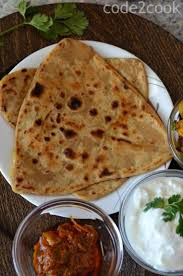

Ajwain Paratha

Description:
Ajwain Paratha is a very simple and salty flat bread which is easy to make and super delicious.
Its simple ingredients including salt, carrom seeds and whole wheat dough come together to deliver
a really delicious meal.
This dish is often eaten with vegetables, chutneys, sauces or even by itself, and is a childhood favourite
of many.
Ingredients:
- Whole wheat flour dough
- Salt
- Ajwain (Carrom seeds)
- Oil
Steps:
- Pepare a dough by mixing water and whole wheat flour
- Roll a small pieace of the dough (enough for one paratha) flat by using a rolling pin
- Sprinkle some salt and Ajwain on the flat dough
- Drop a few drops of oil on the flat dough
- Fold the sheet of dough in half, and then again in half
- Again roll the dough flat
- Place the now triangular sheet of dough on a heated pan with some oil on it and cook till it puffs up a bit
- Serve with condiments of your choice, and enjoy!
Home